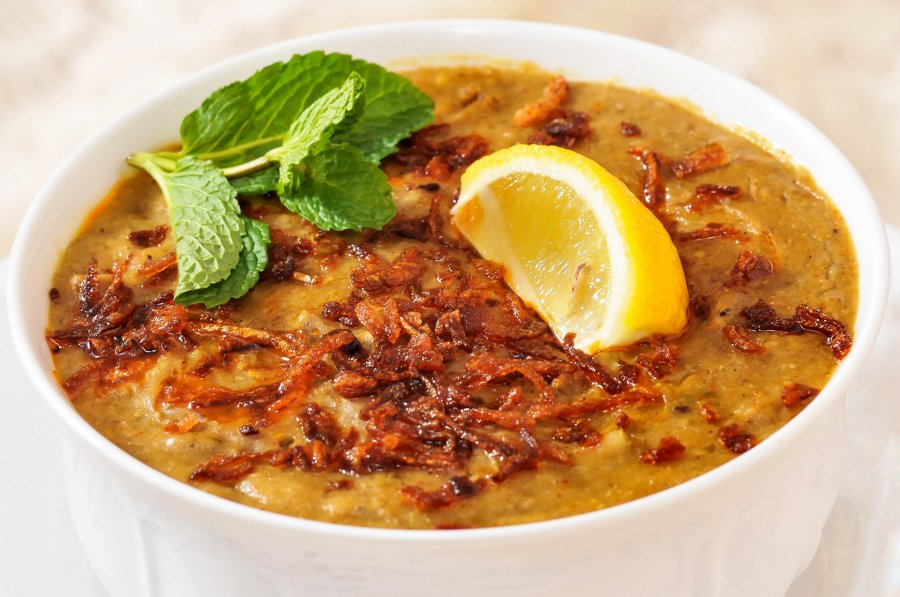

হালিম(Halim)

হালিম(Halim)
উপকরণ(Ingredients)
গরু অথবা খাসির মাংস- ১ কেজি (হাড়সহ)(Mutton or Beef 1 kg with bones)
গম- ১/৪ কাপ(Wheat 0.25 cup)
বুটের ডাল- আধা কাপ
মসুর ডাল- কোয়ার্টার কাপ
মুগ ডাল- কোয়ার্টার কাপ(Different Kinds of Pulse 1 cup)
সুগন্ধি চাল- আধা কাপ(Fragrent Rice 0.5 cup)
পেঁয়াজ কুচি এক কাপ(Thinly Sliced Onion 1 cup)
হলুদ গুঁড়া- ১ চা চামচ(Turmeric Powder 1 tea spoon)
মরিচ গুঁড়া- ১ চা চামচ(Chili Powder 1 tea spoon)
আদা বাটা ১ টেবিল চামচ(Ginger Paste 1 table spoon)
রসুন বাটা ১ টেবিল চামচ(Garlic Paste 1 table spoon)
গরম মসলা গুঁড়া (দারুচিনি, এলাচ, জয়ফল, জয়ত্রি, শাহজিরা ও গোলমরিচ) ১ টেবিল চামচ(Hot Spice 1 table spoon)
হালিমের মসলা- আড়াই টেবিল চামচ(Readymade Halim Space 2.5 table spoon)
তেঁতুলের মাড়- ২ টেবিল চামচ(Turmeric Juice 2 table spoon)
ধনেপাতা কুচি(Coriander leaves)
আদা কুচি(Thinly Sliced Gingers)
লেবু(Limes))
পদ্ধতি(Process)
হাঁড়িতে তেল গরম করে পেঁয়াজ কুচি ভাজুন। হালকা বাদামি হয়ে আসলে গুঁড়া মসলা দিয়ে নাড়ুন। লবণ দিয়ে দিন। মাংস ছোট টুকরা করে দিয়ে দিন। হালিমের মসলা দিয়ে ভালো করে নেড়ে ঢাকনা দিয়ে ঢেকে দিন হাঁড়ি।
১০ মিনিট পর মাংস থেকে পানি বের হয়ে গেলে আবারও নেড়ে দিন। ২ কাপ পানি দিয়ে মাঝারি আঁচে সেদ্ধ করুন মাংস। এরমধ্যে চাল, গম ও ডাল ধুয়ে সামান্য পানি দিয়ে পেস্ট করে নিন একসঙ্গে। একদম মিহি করার প্রয়োজন নেই।
মাংস খানিকটা সেদ্ধ হলে চাল-ডালের মিশ্রণ দিয়ে নেড়েচেড়ে ৫ কাপ পানি দিয়ে দিন। ঘনঘন নাড়তে হবে। একটু পাতলা থাকা অবস্থায় নামিয়ে ফেলতে হবে। নামানোর আগে পানির সঙ্গে গুলিয়ে তেঁতুলের মাড় দিয়ে দিন। সাজানোর উপকরণ কুচি করে উপরে ছিটিয়ে পরিবেশন করুন গরম গরম।
Homepage